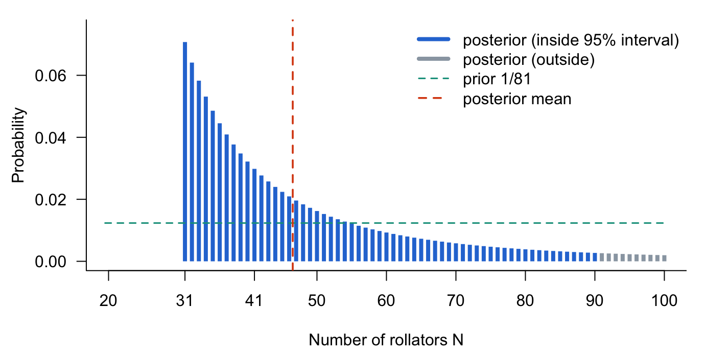

eLearning 30.11. - 4.12.
1. Bayes: how many rollators does the hospital have?
A hospital numbers its rollators \(1, 2, 3, \dots, N\). Nobody knows how many there are. On your ward you find three rollators at random. They have the numbers 12, 25 and 31. Before seeing these numbers we assume: the hospital has at least 20 and at most 100 rollators, and every number in between is equally plausible.
Prior. Which values can \(N\) take, and how probable is each value before we see the data?
Likelihood. The probability of finding exactly these three rollators, if the hospital has \(n\) rollators, is \[P(\text{data} \mid N = n) = \frac{1}{\binom{n}{3}} \quad \text{for } n \ge 31, \qquad \text{and 0 for } n < 31.\] Explain why the formula has this form for \(n \ge 31\), and why it is 0 for \(n < 31\).
Posterior in R. Let an AI write R code that computes the posterior with Bayes’ theorem and plots it. What is the most probable \(N\)? What are the posterior mean and a 95% credible interval? As a check, let the AI also write a simulation: draw \(N\) from the prior, find three rollators at random, and keep the hospitals in which the highest number found is 31.
Symbolic check. Let an AI or Wolfram Alpha compute the same results exactly. Do they agree with R?
Prior. What changes if the hospital can have up to 200 rollators?
Try it yourself. In the animation How many rollators does the hospital have? the app secretly chooses the number of rollators. With every click you find one more rollator, and you can watch how each number changes the posterior.
Solution
a) \(N\) can be \(20, 21, \dots, 100\). These are 81 values, so each has prior probability \(1/81\).
b) From \(n\) rollators, \(\binom{n}{3}\) different groups of three can be found, and each group is equally likely. Exactly one of them is the group \(\{12, 25, 31\}\), so the probability is \(1/\binom{n}{3}\). If the hospital had fewer than 31 rollators, rollator number 31 would not exist, so the probability is 0.
c) and d) Bayes’ theorem: posterior \(=\) prior \(\times\) likelihood, divided by the sum over all possible \(N\). The prior \(1/81\) is the same for every \(n\) and cancels. Every \(N\) below 31 is ruled out. For \(n = 31, \dots, 100\) \[P(N = n \mid \text{data}) = \frac{1/\binom{n}{3}}{\sum_{j=31}^{100} 1/\binom{j}{3}} = \frac{95700}{301 \cdot \binom{n}{3}}.\] The sum in the denominator is \(301/95700 \approx 0.0031\). The larger the hospital, the less likely it is to find exactly these three rollators. Therefore \(N = 31\) is the most probable value.
| Quantity | Result |
|---|---|
| Most probable \(N\) | 31 |
| \(P(N = 31 \mid \text{data})\) | \(660/9331 \approx 0.07\) |
| Posterior mean | \(2000/43 \approx 46.5\) |
| 95% credible interval | 31 to 90 |
n <- 20:100 # possible values of N
prior <- rep(1/81, 81) # uniform prior
lik <- ifelse(n >= 31, 1 / choose(n, 3), 0) # likelihood
post <- prior * lik / sum(prior * lik) # Bayes' theorem
n[which.max(post)] # most probable N## [1] 31## [1] 46.51163## [1] 31 90par(mar = c(4.2, 4.4, 1, 1), las = 1)
plot(n, post, type = "h", lwd = 4, lend = 1,
col = ifelse(n >= 31 & n <= 90, "#2a78d6", "#9aa5b1"),
xlab = "Number of rollators N", ylab = "Probability",
ylim = c(0, 0.075), xaxt = "n", bty = "l")
axis(1, at = c(20, 31, 41, 50, 60, 70, 80, 90, 100))
lines(c(19.5, n + 0.5), c(prior[1], prior), type = "s", lty = 2, col = "#0f9d8a", lwd = 1.5)
abline(v = sum(n * post), lty = 2, lwd = 1.8, col = "#d9480f")
legend("topright", bty = "n",
legend = c("posterior (inside 95% interval)", "posterior (outside)",
"prior 1/81", "posterior mean"),
col = c("#2a78d6", "#9aa5b1", "#0f9d8a", "#d9480f"),
lty = c(1, 1, 2, 2), lwd = c(4, 4, 1.5, 1.8))
Simulation as a check: draw \(N\) from the prior, find three rollators at random, and keep the hospitals in which the highest number found is 31.
set.seed(2026)
N_sim <- sample(n, 1e6, replace = TRUE)
m_sim <- vapply(N_sim, function(N) max(sample.int(N, 3)), numeric(1))
keep <- N_sim[m_sim == 31]
length(keep) # number of hospitals kept## [1] 17026## [1] 46.54775Wolfram Alpha:
sum 1/binomial(n,3) for n=31 to 100 -> 301/95700
(1/binomial(31,3)) / (301/95700) -> 660/9331 = 0.07
(sum n/binomial(n,3) for n=31 to 100) / (301/95700) -> 2000/43 = 46.5e) With up to 200 rollators the posterior mean rises to 52 and the 95% credible interval widens to 31 to 138. Three rollators are little information about large values of \(N\), so the prior still matters.
2. Reading
- Greenland et al. (2016): Statistical tests, P values, confidence intervals, and power: a guide to misinterpretations.
- Optional: Goodman (2008): A dirty dozen: twelve P-value misconceptions.
- Optional: Wasserstein, Schirm and Lazar (2019): Moving to a world beyond “p < 0.05”.
- Optional: Gigerenzer (2004): Mindless statistics.
3. Review the material
Go carefully through the material of the last two classroom days: Bayesian statistics and NHST, up to the proportions test for more than one proportion. The chi-squared test for independence is not part of this review. We will go through it in detail in class.
4. Find a paper for our journal club
Find a quantitative article from your field that (ideally) really interests you, preferably one with code and data. Please send me your article by email (PDF or link). We plan an “extended” journal club in which we discuss, analyse, criticise and reproduce some of these papers. Five of you should therefore volunteer to present their article and share their thoughts about it (if no volunteers come forward, we can also extend the material and the exam gets bigger :D). You can use questions such as the following as a guideline, but you are not limited to them:
- What is the article about?
- Who were the patients?
- How relevant is the research question?
- Can you follow every step?
- Can you recalculate the results?
- What is good and what is bad about the article?
- What can you take away for your master’s thesis, and which mistakes can you avoid?
Recommendation. First read the article carefully yourself and annotate it. Then let a strong LLM (e.g., Fable 5.2) review it. Give it the full PDF including the supplement, and instruct it with the things that you deem important about a scientific paper (you may also ask an AI to extend your list). For example:
- Dichotomous thinking should be caught (“significant”, “the CI included zero”, …).
- Table 1 fallacy. In a randomised controlled trial, were the baseline differences between the groups tested with hypothesis tests (p-values in Table 1)?
- Reporting guidelines. Were the appropriate guidelines for this type of study cited and checked (e.g., CONSORT, STROBE, PRISMA, see the EQUATOR Network)?
- Over-interpretation. Do the abstract and the conclusion claim more than the results show? Is causal language used for observational data?
- Numbers. Do the numbers in the abstract, text, tables and figures agree? Do the group sizes add up? Are the standard deviations possible for the scale (see the first eLearning)? Let the LLM recalculate in R whatever can be recalculated from the reported numbers.
- Protocol. Was the study registered beforehand, and do the primary outcome and the analysis match the registration?
- Code and data. Are they openly available? “Available on reasonable request” does not count. Authors need a good reason not to share their data. The code must always be available.
- Clinical relevance. How large is the effect, how uncertain is it, and would it matter to a patient?
- Sources. You can also download (via ZHAW VPN) all (or most) PDFs the paper references and instruct the LLM to check every statement against the original source.
LLMs make mistakes too. Ask for the exact place (page, table, quote) for every point and check it in the paper yourself. A second LLM (or a fresh chat) can criticise the first review.
Finally, compare your personal notes with the review. What did the LLM find that you did not (don’t worry, this is a long list, also for me)?